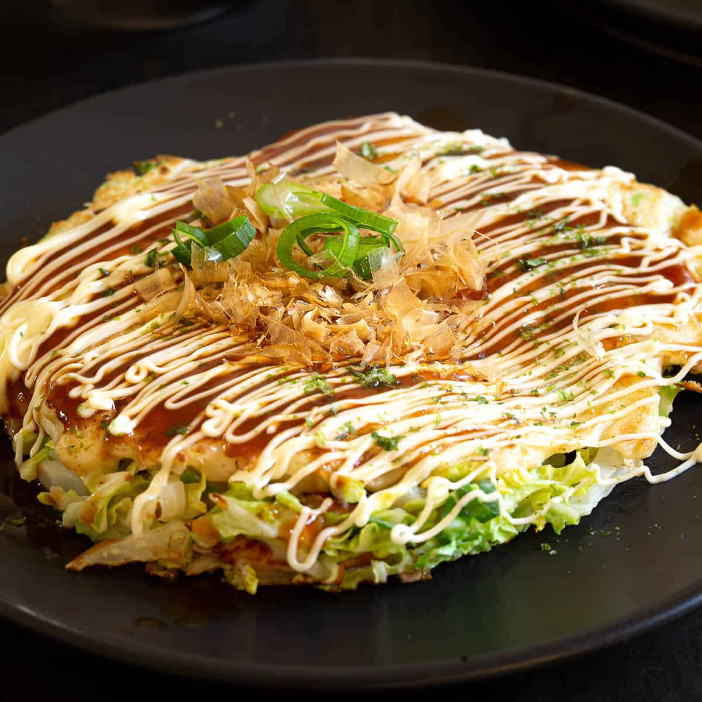

Okonomiyaki

A prevalent Japanese streetfood
Where american pancakes are made with sugar and topped with syrup, Okonomiyaki is a savory meat-cabbage pancake topped with seaweed and fish flakes
Ingredients:
- 200 ml water
- 1 tsp Konbu dashi stock powder
- 160g plain flour
- 4 eggs
- 1/4 tsp salt
- 1/4 tsp sugar
- 480 g finely chopped cabbage
- 40g chopped green shallot
- 40g Tenkasu
- 160g thinly sliced pork/bacon
- bonito flakes
- Aonori
- 1 Tbsp olive oil
- 1/4 cup Okonomyaki Sauce
Steps:
- Dissolve the dashi powder into the water to make the dashi stock.
- Place the flour in a large bowl and add salt, sugar, and pour the dashi stock in to mix. Set aside.
- Divide the chopped cabbage, green shallots, and tenkasu into 4 small mixing bowls.
- Add one egg each and 1/4 of flourand dashi mixture to each bowl.
- Add one egg each and 1/4 of flour and dashi mixture to each bowl.
- Mix them well together with a fork.
- Heat cooking plate to 200 degrees and pour the cabbage mixture onto the cooking plate to spread approximately 2cm thickness.
- Place the thinly sliced pork/bacon and bonito flakes on top of the cabbage mixture.
- When the edge of the okonomiyaki bad become firm and cooked, flip it over with two egg flippers.
- Put the lid on and steam grill for a few minutes.
- Turn the okonomiyaki over one more time to check whether the meat is cooked.
- Brush the okonomiyaki with Oknomiyaki Sauce and garnish with more bonito flakes/aonori to serve.